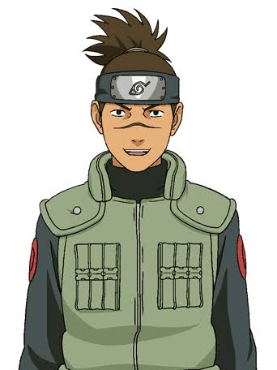

Ninja de Konoha
Naruto Uzumaki
Nunca se rinde y siempre protege a sus amigos.
Estado: modo normal
Electiva I · Práctica de eventos
Cinco ninjas, cinco formas de interactuar.
Ninja de Konoha
Nunca se rinde y siempre protege a sus amigos.
Estado: modo normal

Ninja de Konoha
Un ninja habilidoso que domina el estilo del rayo.
Pasa el cursor para activar el Chidori.

Ninja médico
Combina inteligencia, fuerza y un gran talento médico.
Fuerza interior: su determinacion puede cambiar cualquier batalla.

Jounin · Líder del equipo
El ninja copia guia al Equipo 7 con calma y experiencia.
Su ojo izquierdo permanece cubierto.

Instructor de la Academia
El primer maestro que reconoció el esfuerzo de Naruto.
Haz clic o presiona Enter para ver el reverso.